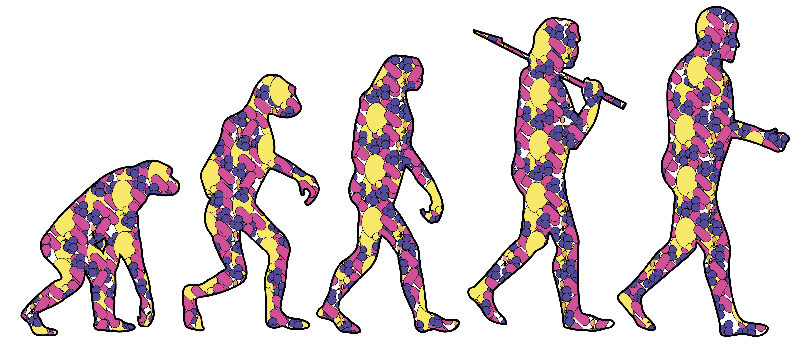

Exploring the role of microbes in mammalian physiology
The microbiome extends the human gene repertoire by a factor of ~100 bringing new possibilities for interacting with our environment. My particular interests lie in how microbes affect xenobiotics (drugs and dietary toxins) through their unique pathways of metabolism, and their influence on human pathways. I hope to harness this basic science for personalized medicine approaches including through probiotics.
Current Research Interests:
Does the microbiome affect drug transport and metabolism? Using combinations of in vivo and in vitro models to examine the effect of microbes on drug transport (PGP) and uncover novel microbial metabolism of xenobiotics. Sequenced new collection of gut Actinobacteria with combination Illumina/PacBio technology and successfully applied comparative genomics/transcriptomics to identify microbial effectors.
How does extreme caloric restriction affect the gut microbiome? Using multi 'omics approaches on human datasets informed by gnotobiotic animal models to uncover the functional consequences of microbiome 'starvation'. Uncovered new potential effects on microbial pathogenicity and its potential impacts on weight loss.
Do gnotobiotic mouse models recapitulate human communities and can they be improved? Using meta-analysis and multi-donor colonized animals combined with high-resolution DNA approaches to examine microbial transplantation efficiency and methods for improving efficiency.
CRISPR: Finding predators and prey in metagenomes With an eye towards engineering applications, using combinations of metagenomes and isolates to identify naturally occurring CRISPR targets in metavirome samples to identify potential vectors and understand basic biology of type 1-C systems.
Microbiome, Probiotics, Xenobiotics, Bioinformatics
